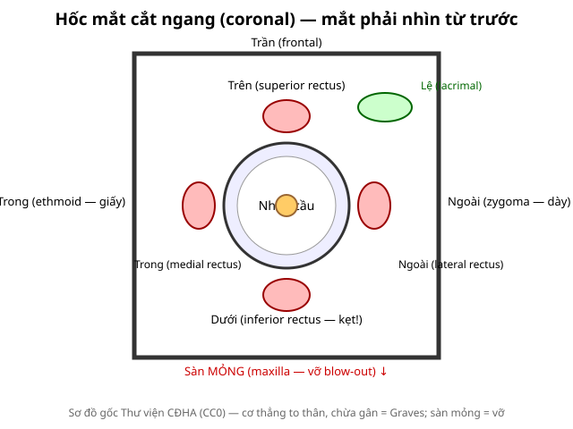
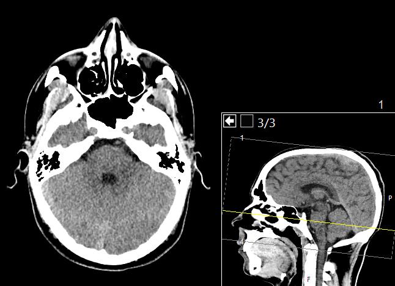

410 — Giải phẫu hốc mắt cắt lớp / Orbital cross-sectional anatomy
Tags: pattern:binh-thuong vung:hoc-mat anatomy:hoc-mat
Mức chắc chắn (certainty): tổng hợp y văn (literature synthesis) — nhóm tự biên từ y văn mở, chưa gắn ca nguyên văn đơn lẻ.
1. Tổng quan — 4 thành + 4 cơ thẳng + 1 dây thần kinh
- Hốc mắt là tháp xương: trần (frontal) dày, sàn (maxilla) mỏng nhất, trong (ethmoid/lamina papyracea — giấy) mỏng nhì, ngoài (zygoma) dày nhất. TẠI SAO vỡ hay gặp sàn + trong: mỏng + xoang kề (hàm trên, sàng) làm đường thoát áp lực.
- 4 cơ thẳng (trên/dưới/trong/ngoài) + cơ chéo trên; thần kinh thị (optic nerve) đi giữa ra lỗ thị giác; tuyến lệ trên-ngoài; tĩnh mạch mắt trên (dấu TED nặng).
- TẠI SAO CT cửa sổ xương + mô mềm: xương tìm vỡ (sàn/giọt lệ), mô mềm tìm kẹt cơ/máu/tụ dịch.

Sơ đồ gốc Thư viện CĐHA, CC0.
CT sọ–hốc mắt không cản quang, lát ngang mức nhãn cầu (kèm ảnh sagittal định vị mức cắt — đường vàng): nhãn cầu hai bên, thần kinh thị đi từ cực sau nhãn cầu về đỉnh, xoang sàng/hàm kề, thùy thái dương hai bên. Wikimedia Commons: Mikael Häggström, M.D., CC0.2. Mốc phải thuộc (gamut vị trí)
- Sàn (maxilla): cơ thẳng dưới + mỡ sa — vỡ blow-out, kẹt cơ (bài 420).
- Trong (ethmoid): cơ thẳng trong + xoang sàng mờ — vỡ + viêm xoang lan.
- Đỉnh (apex): thần kinh thị + mạch — chèn ép đỉnh = mù (OCS, u, TED nặng).
- Ngoài (zygoma): ít vỡ đơn độc; gãy phức hợp gò má (tripod).
3. Bảng biến thể hay nhầm
| Biến thể | Hình ảnh | Lành khi | Nghĩ bệnh khi |
|---|---|---|---|
| Rãnh dưới ổ mắt (infraorbital groove) | Khuyết sàn | Đối xứng, bờ xương đều | Lệch 1 bên + mô mềm sa → vỡ |
| Kênh thị 2 bên hơi lệch cỡ | Lỗ thị 2 bên khác cỡ nhẹ | Không triệu chứng | Kèm u/dày → glioma/meningioma |
| Xoang hàm kém phát triển | Sàn cao | Bẩm sinh, 2 bên | 1 bên sau chấn thương → xẹp xoang (silent sinus) |
4. Protocol
- CT đa dãy lát mỏng ≤ 1 mm + MPR coronal/sagittal: chuẩn chấn thương và u (coronal thấy sàn/giọt lệ rõ nhất).
- MRI (T1/T2 fatsat + cản quang): cơ (TED/viêm), thần kinh thị, đỉnh ổ mắt.
- Siêu âm nhãn cầu: trong nhãn cầu (bong võng mạc — bài 411 dự kiến).
5. Cạm bẫy
- Thể tích trung bình (volume averaging) giả dày cơ — lát mỏng + MPR xác nhận.
- Xoang mờ sau chấn thương = máu xoang (gợi vỡ sàn) — đừng đọc viêm xoang đơn thuần.
- Trẻ em trapdoor: X-quang/CT vỡ ít nhưng kẹt cơ nhiều (trắng mắt + nôn + nhịp chậm) — mổ sớm.
6. Tự lượng giá — Blind Quiz
Ca 1 — Nhìn sơ đồ, kể tên 4 cơ + 2 tường mỏng nhất.
Bấm để hiện đáp án
- Trên/dưới/trong/ngoài; mỏng nhất: sàn (maxilla) rồi trong (ethmoid) — 2 đường vỡ kinh điển.
Ca 2 — Chấn thương + nhìn đôi dọc + CT giọt lệ sàn: cơ nào kẹt? Vì sao trẻ nguy hiểm hơn? (Nối bài 420.)
Bấm để hiện đáp án
- Cơ thẳng dưới kẹt; trẻ trapdoor: xương đàn hồi sập lại kẹp cơ → thiếu máu cơ nhanh, mổ sớm.
Ca 3 — CT lát ngang mức nhãn cầu: kể tên các mốc chính và tường nào kề xoang sàng.
- Câu hỏi: Nhãn cầu, thần kinh thị và các xoang kề tường nào của hốc mắt? Vì sao tường trong–sàn dễ vỡ?
Bấm để hiện đáp án
- Nhãn cầu (thấu kính/hậu phòng) hai bên; thần kinh thị chạy từ cực sau nhãn cầu về đỉnh hốc mắt; xoang sàng kề tường trong (lamina papyracea — mảnh giấy), xoang hàm kề sàn (maxilla).
- Tường trong và sàn mỏng nhất + tựa vào xoang kề → áp lực thoát qua đây → vỡ blow-out kinh điển; nhớ đối chiếu 2 bên (thể tích riêng phần giả dày cơ).
- Nguồn ảnh: Wikimedia Commons, Mikael Häggström M.D., CC0.
Bài liên quan chéo
Không dùng để chẩn đoán độc lập khi chưa có người hướng dẫn.